1
NetBeans GUI Builder
As of NetBeans 5.0, the IDE's GUI Builder
has been revamped to make it more powerful and intuitive, liberating
users to build professional looking GUIs without an intimate
understanding of layout managers. NetBeans' GUI Builder eliminates
the difficulties of building GUIs, enabling you to lay out your forms
by simply placing components where you want them.
This tutorial is geared to the
beginner and introduces the basic construction of a GUI. A basic
understanding of the Java Programming Language
is expected.
Expected duration: 60 minutes
(excluding homework)
Software Needed
Before you begin, you need to install the following software on your
computer.
- Java Standard Development Kit (JDK™) version
6.0 (download)
- If you have not installed it yet, install it as described here.
- NetBeans IDE 6.5 (download)
- If you have not installed it yet, install it as described here.
- 5119_nbguibuilder.zip (download)
- It contains this document and the lab contents
- Download it and unzip in a directory of your choice
OS platforms you can use
- Windows
- Solaris x86, Solaris Sparc
- Linux
- Mac OS X
Change Log
- Nov. 10th, 2007: Created
- March 20th, 2010: Homework email address changed (Michèle Garoche)
Lab Exercises
Exercise 1: Create ContactEditor GUI using
NetBeans GUI Builder
This exercise guides you through the
process of creating the graphical user interface (GUI) for an
application called ContactEditor using the NetBeans IDE's GUI Builder
(also known by the code name Matisse). In the process, you will layout
a
GUI front-end that enables you to view and edit contact information of
individuals included in an employee database.
This exercise is based on the GUI Building
in NetBeans IDE article written by Talley Mulligan from
www.netbeans.org.
(1.1)
Create a new NetBeans project
0. Start NetBeans IDE.
1. Create a NetBeans project
- Select File->New Project.
(Figure-1.11 below)
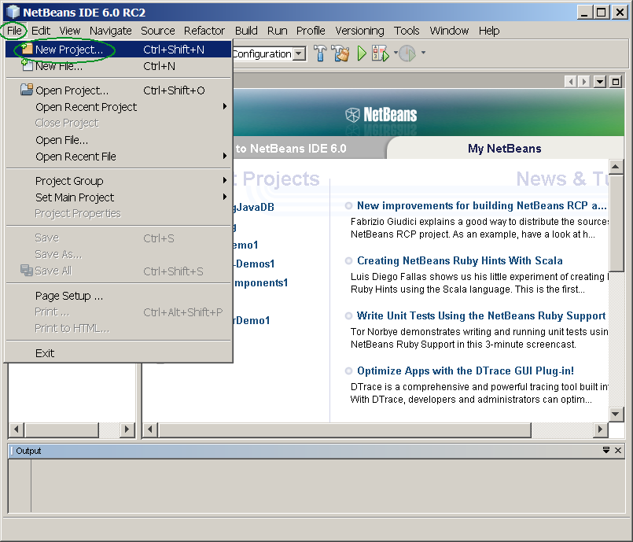
Figure-1.11: Create a new NetBeans project
- Observe that the New Project
dialog box appears.
- Select Java under Categories and Java Desktop Application under Projects. (Figure-1.12 below)
- Click Next.
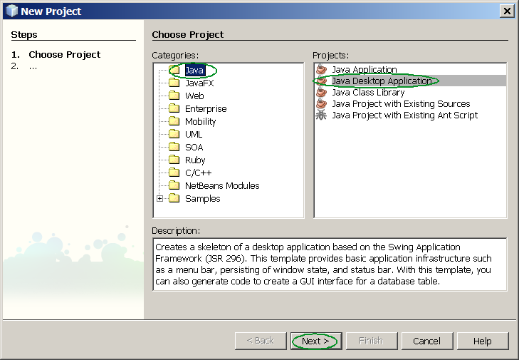
Figure-1.12: Create Java Desktop Application project
2. Give a name to the project.
- Observe that the Name and
Location pane appears.
- For the Project Name
field, enter ContactEditor.
- Leave the default selection of
Basic
Application
under Choose Application Shell.
- Click Finish.
(Figure-1.13 below)
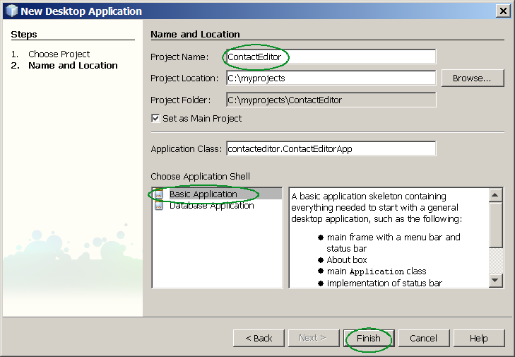
Figure-1.13: Name and Location pane
return
to top of this exercise
(1.2)
Add a Panel to the project
1. Add a Panel component to the Design
window. (In this document, the terms "Panel" and "JPanel" are
used interchangeably.)
- Drag Panel component
under Swing Containers section
to
the upper left corner of the Design window. When the component is
located near the container's top
and left edges, horizontal and vertical alignment guidelines appear
indicating the preferred margins. Click in the form to place the Panel
in this location.
- Observe that the Panel component appears in the designer with
orange colored line highlighting that it is selected, as shown in Figure-1.21 below.
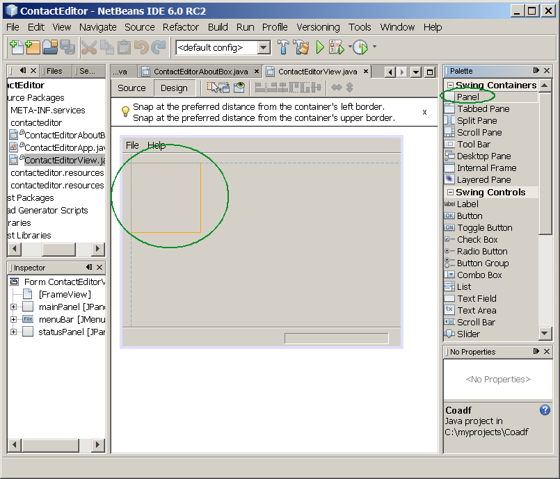
Figure-1.21: Add a JPanel container component to the GUI
2. Resize the Panel component.
- Select the JPanel you just added. The small square resize
handles reappear around the component's perimeter.
- Click and hold the resize handle on the right edge of the
JPanel and drag until the dotted alignment guideline appears near the
form's edge.
- Release the resize handle to resize the component.
- Observe that the JPanel component is
extended to span
between the container's left and right margins in accordance with the
recommended offset, as shown in the following illustration.
(Figure-1.22 below)
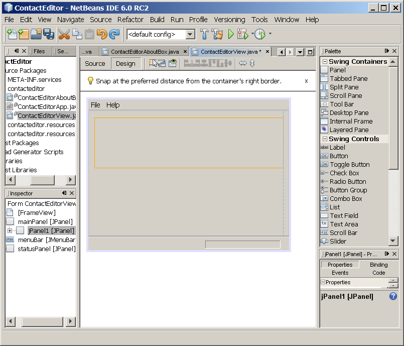
Figure-1.22: Extend the JPanel to the right
3. Change the properties of the JPanel
component to add a border.
- In the Properties pane
in the right and lower corner of the IDE,
click the ellipsis button (...) next
to the border property.
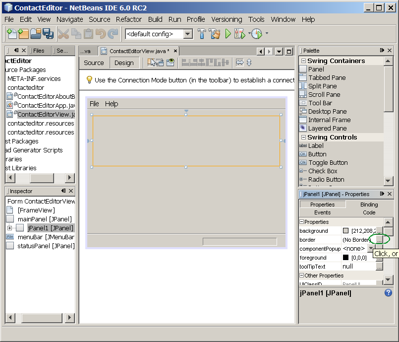
Figure-1.23: Change the border property of the JPanel container
- Observe that the jPanel1[JPanel]
- border property editor dialog
box appears.
- Select TitledBorder.
- Set the value of the Title field to Name.
- Change the color to your favorite color.
- Change the Font to
Bold. (Figure-1.24 below)
(1.3)
Add
components to the Panel
Now we need to start adding the components that will present the
actual contact information in our contact list. In this step, we'll add
four JTextFields that will display the contact information and the
JLabels that will describe them. While accomplishing this, notice the
horizontal and vertical guidelines that the GUI Builder displays,
suggesting the preferred component spacing as defined by your operating
system's look and feel. This ensures that your GUI is automatically
rendered respecting the target operating system's look and feel at
runtime.
1. Add a
Label and
Text Field components to the
JPanel container component.
(In this document, the terms "Label" and "JLabel" are used
interchangeably.)
- Drag the Label component
under Swing Controls section
to the top left
corner of the Name JPanel.
When the
guidelines appear indicating that the JLabel is positioned in the top
left corner of the JPanel with a small margin at the top and left
edges, click to place the label. (Figure-1.31 below)
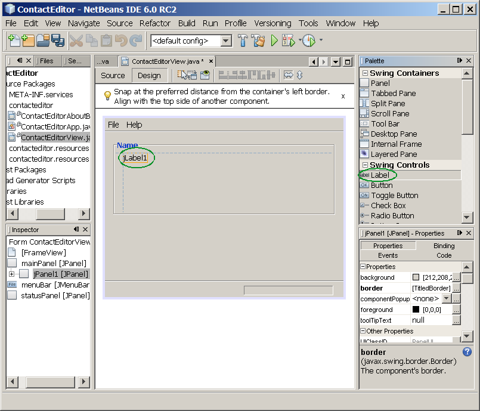
Figure-1.31: Add a Label component to the JPanel container
- Double click the newly added Label
component and change the value
to First Name.
- Drag the Text Field
under Swing Controls section
and drop it just next to
the First Name Label
component. (Figure-1.32 below)
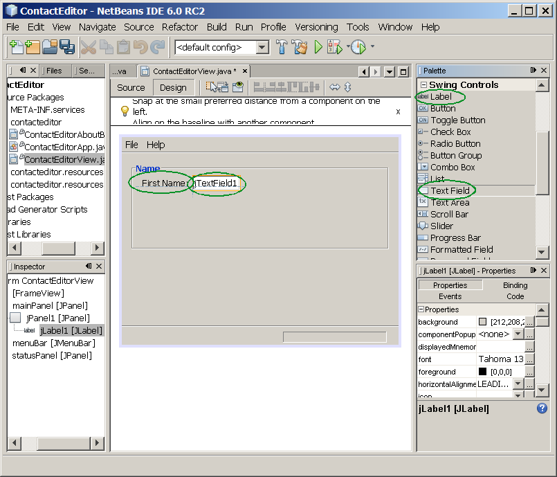
Figure-1.32: Add Label and Text Field components to the JPanel container
2. Add another set of Label and Text Field components. (In this
document, the terms "Text Field" and "JTextField" are used
interchaneably.)
- Drag and drop another set of Label and Text Field components just
next to the first set.
- Change the name of the Label to Last
Name.
- Drag the JTextField's right edge resize handle toward the
right edge of the enclosing JPanel. When the vertical alignment
guidelines appear suggesting the
margin between the text field and right edge of the JPanel, release the
mouse button to resize the JTextField.
- Observe that the JTextField's right edge snaps into alignment
with the
JPanel's recommended edge margin, as shown in the following
illustration. (Figure-1.33 below)
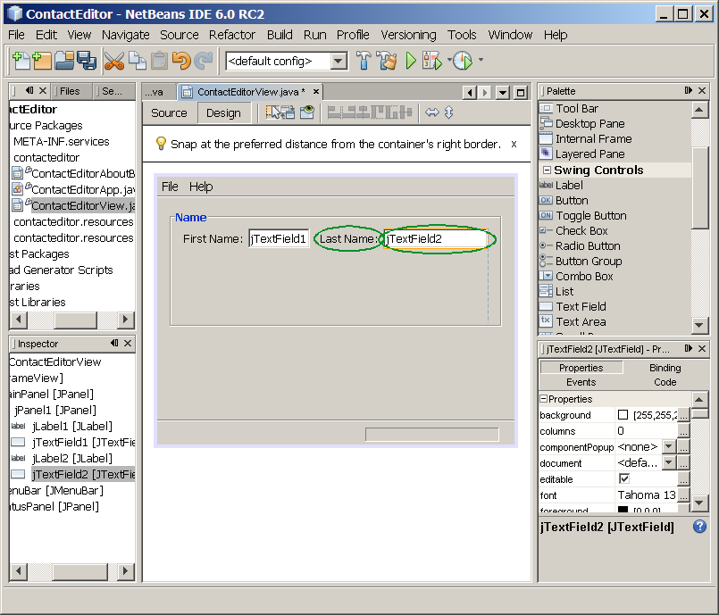
Figure-1.33: Add Last Name Label and Text Field components
3. Add two Label Components.
Now we'll add the
Title: and
Nickname: JLabels that describe two
JTextFields that we're going to add in a minute. We'll pick and plop
the components while pressing the Shift key, to quickly add them to the
form. While accomplishing this, again notice that the GUI Builder
displays horizontal and vertical guidelines suggesting the preferred
component spacing.
- In the Palette window, select the JLabel component from the
Swing category by clicking and releasing the mouse button.
- Move the cursor over the form directly below the First Name:
JLabel we added earlier. When the guidelines appear indicating that the
new JLabel 's left edge is aligned with that of the JLabel above and a
small margin exists between them, shift-click to place the first JLabel
- While still pressing the Shift key, click to place another
JLabel immediately to the right of the first. Make certain to release
the Shift key prior to positioning the second JLabel If you forget to
release the Shift key prior to positioning the last JLabel simply press
the Escape key.
- The JLabel are added to the form creating a second row. Nodes
representing each component are
added to the Inspector window.
- Change the values of the Labels to Title: and Nickname: respectively.
(Figure-1.34 below)
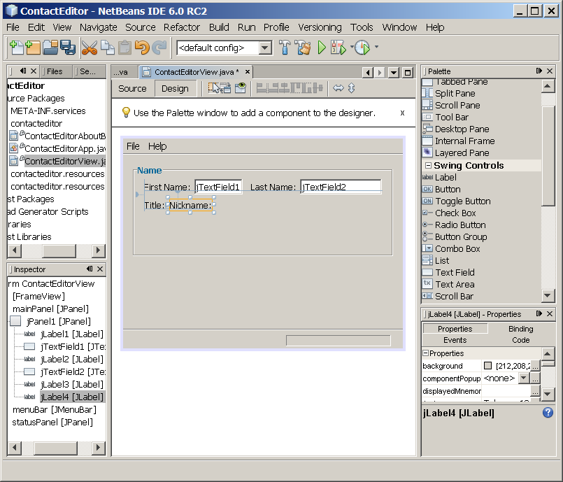
Figure-1.34: Add Title: and Nickname: Label components
return
to top of this exercise
(1.4)
Insert components
Often it is necessary to add a component between components that
are already placed in a form. Whenever you add a component between two
existing components, the GUI Builder automatically shifts them to make
room for the new component. To demonstrate this, we'll insert a
JTextField component between the Title: and Nickname: components we
added previously.
1. Inser
t a JTextField component between two JLabel components
- In the Palette window, select the JTextField component from the
Swing Controls section.
- Move the cursor over the Title:
and Nickname: JLabels on the
second row such that the JTextField overlaps both and is aligned to
their baselines. (Figure-1.41 below)
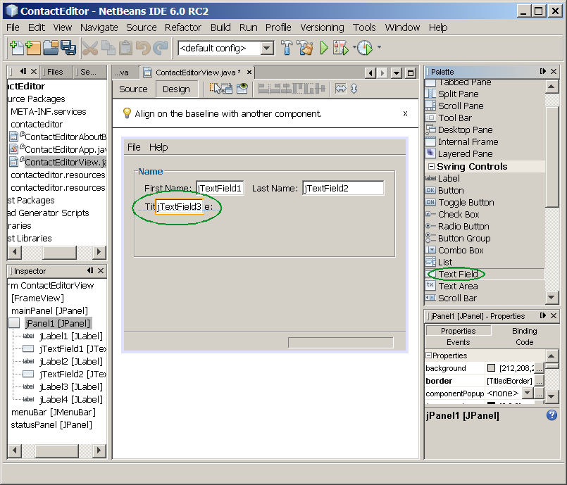
Figure-1.41: Insert a Text Field component between the two Label
component
- Observe that the Text Field component is inserted between the
Title: and Nickname: Labels. (Figure-1.42 below)
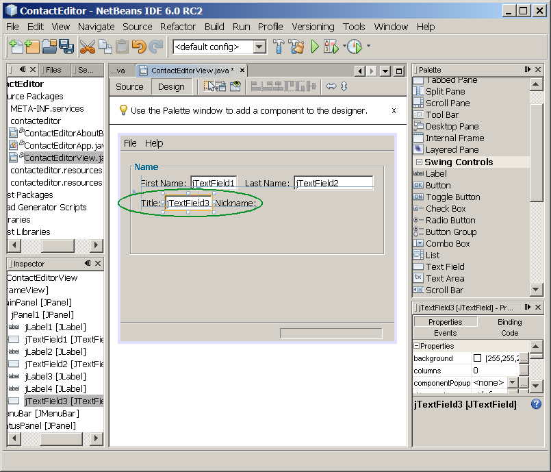
Figure-1.42: Text Field component is now inserted between the two Label
components
2. Add a Text Field component.
- Drag a new Text Field component and place it just beside
Nickname: Label component. (Figure-1.43 below)
- Extend the newly added Text Field component to the right edge of
the Panel.
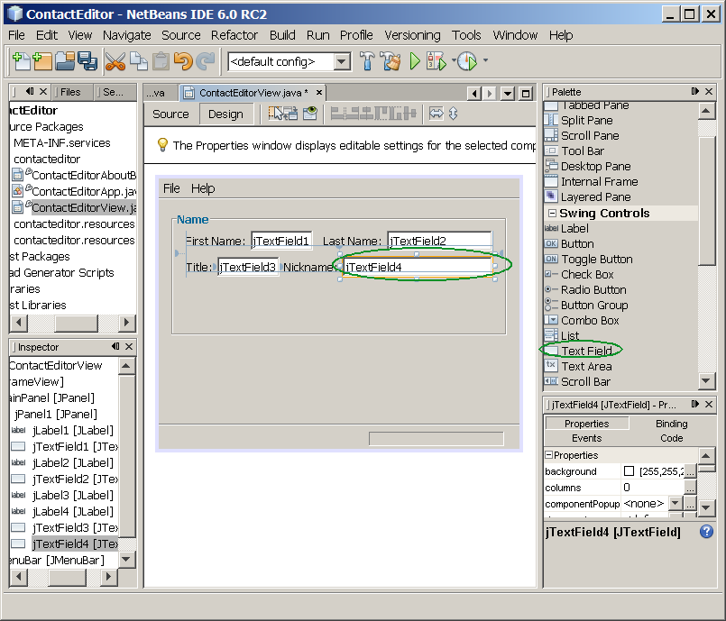
Figure-1.43: New Text Field component is added
return
to top of this exercise
(1.5)
Preview the
design work
You can do the Preview to see what you've done so far.
1. Click the
Preview Design
button. (Figure-1.51 below)
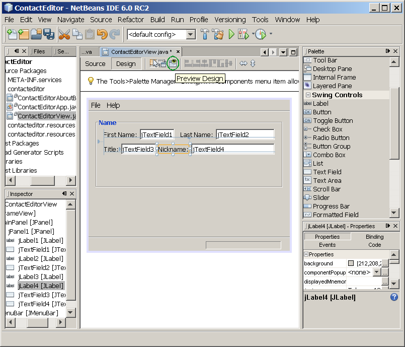
Figure-1.51: Preview Design
2. Observe abnormalities.
- Observe that a ContactEditorView dialog box appears
- Note that the First Name:
and Title: Labels are not
right aligned
yet. Same as Last Name:
and Nickname: Labels.
- Note also that the four Text Fields are not in the same
size.
(Figure-1.52 below)
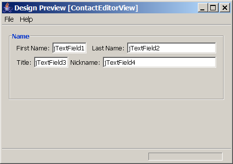
Figure-1.52: Preview
3. Observe the resizing abnormality.
- Resize the window (by extending the right edge of the window
toward the right edge of the Panel) and observe that the Text Fields of
the Last
Name: and Nickname: fields are resizing while the Text Fields of the
First Name: and Title: fields are not resizing. (Figure-1.53
below)
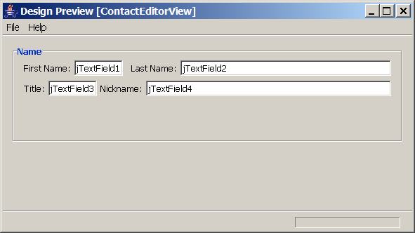
Figure-1.53: Resizing abnormality
In this step, you have observed three abnormalities. In the next
step, you are going to address them.
return
to top of this exercise
(1.6)
Fix the
abnormalities
1. Right align the Labels.
- Select First Name: and Title: JLabel components and select "Align
right in column" icon. (Figure-1.61 below)
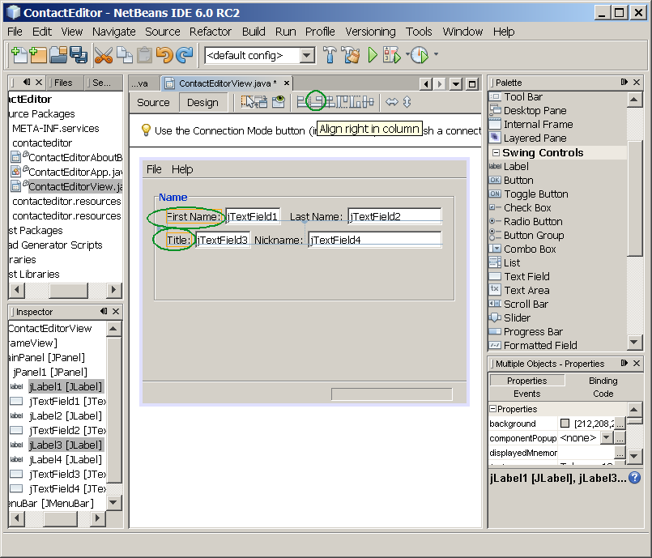
Figure-1.61: Right align the First Name: and Title: JLabel components
- Select Last Name: and Nickname: JLabel components and
select
"Align right in column" icon.
(Figure-1.62 below)
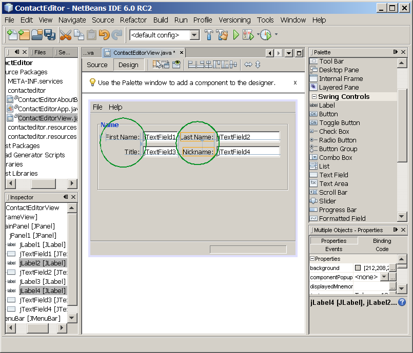
Figure-1.62: Right alignment is performed
2. Fix resizing problem.
- Select Text Field components of the First Name: and Title: and select Change horizontal resizability icon.
(Figure-1.63 below)
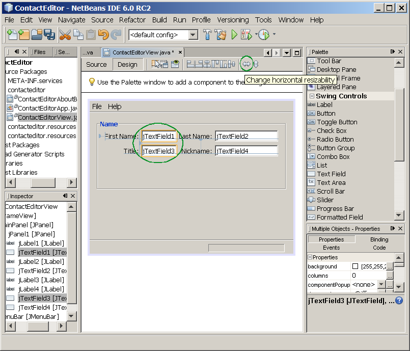
Figure-1.63: Change horizontal resizability
3. Make all Text Fields to be the default size.
- Select all Text Field components and then select Set Default Size.
(Figure-1.64 below)
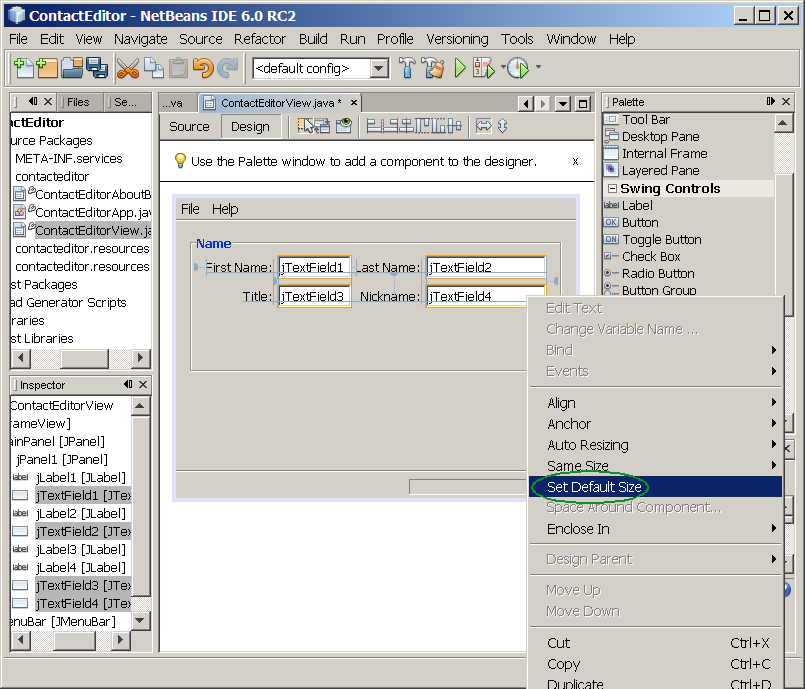
Figure-1.64: Set Default size
4. Preview Design
- Click Preview Design icon.
- Observe that the First Name: and Title: Labels are right
aligned. Also observe that the Last Name: and Nickname: Labels
are right aligned as well.
- Observe that the Text Field components are the same size.
- Observe that the resizing works for all 4 Text Field components.
(Figure-1.65 below)
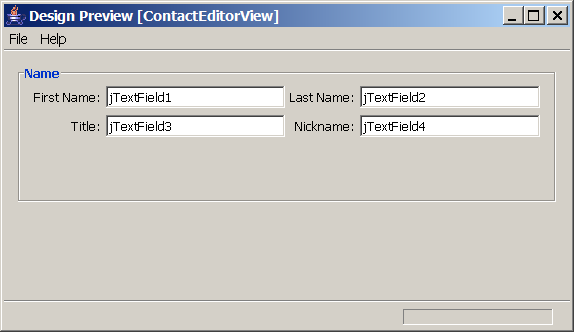
Figure-1.65: Preview Design with corrected behavior
return
to top of this exercise
(1.7)
Add a Combo Box
component
1. Add a new Label component. (Figure-1.71 below)
- Drag the Label component
and drop it under the Title: label
right aligned. (Figure-1.71 below)
- Change the value of the label to Display
Format:.
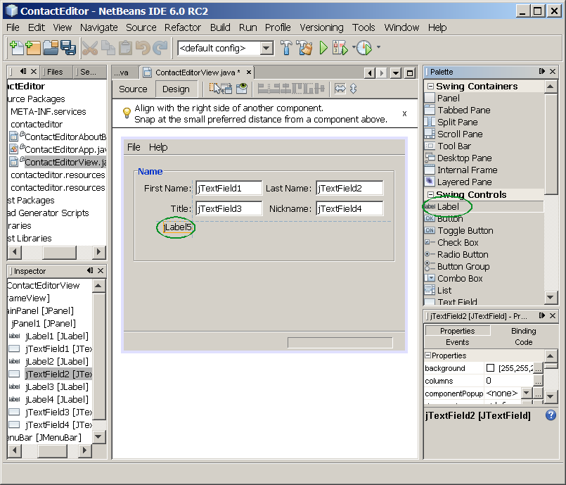
Figure-1.71: Add a new label
2. Add a Combo Box component.
- Drag the Combo Box and
drop it right beside the Display
Format:
Label component.
- Drag the right handle of the Combo Box component to be
right-aligned with the other components.
(Figure-1.72 below.)
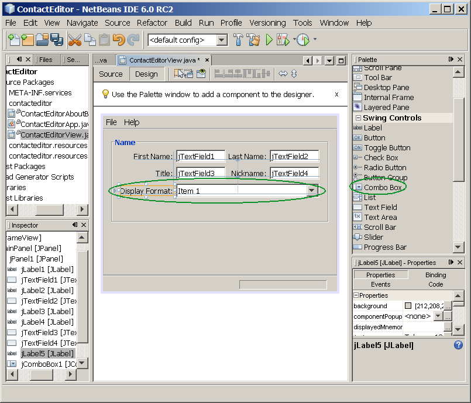
Figure-1.72: Combo Box is added
- Adjust the lower handle of the JPanel upward. (Figure-1.73
below)
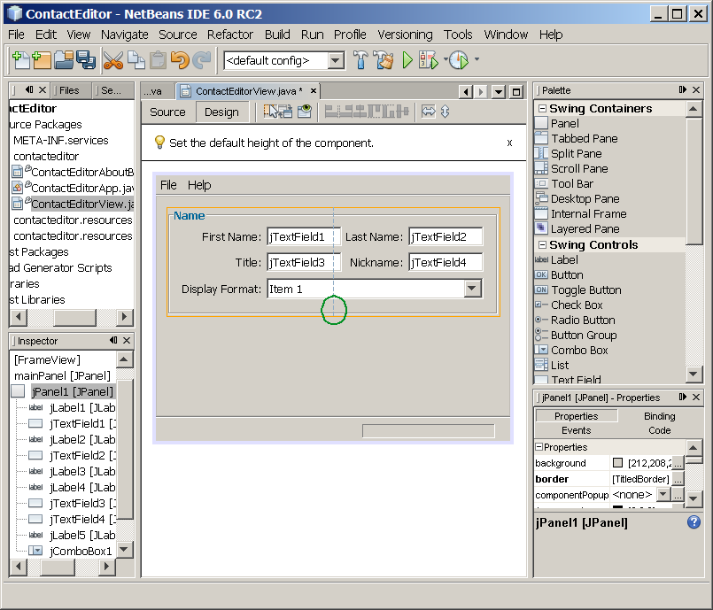
Figure-1.73: Resize the height of the JPanel container
return
to top of this exercise
(1.8)
Observe the
source code generated
1. Click Source tab window and observe the source code that was
generated by the GUI Builder. (Figure-1.81 below)
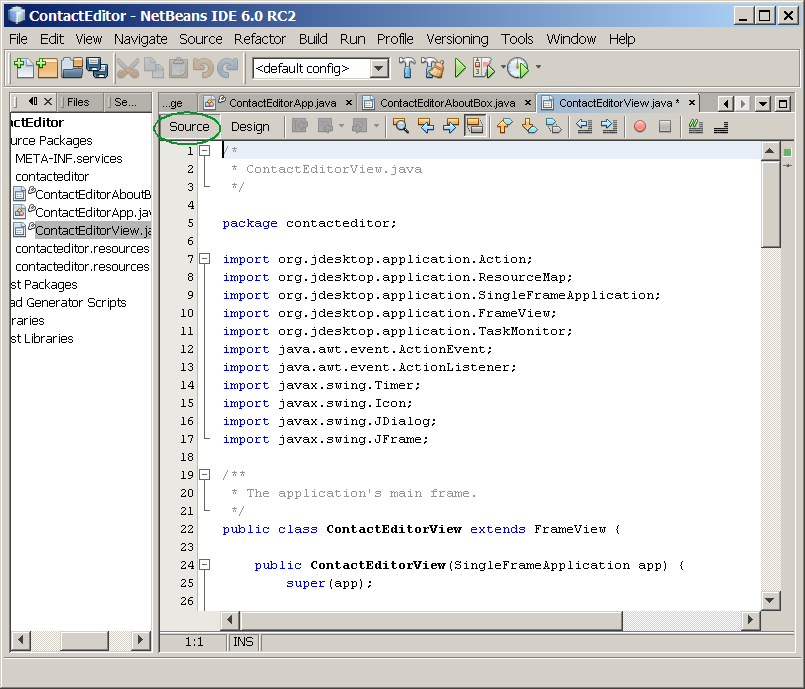
Figure-1.81: Source code that was generated by the GUI Builder
return
to top of this exercise
Summary
In this exercise, you have created
a ContactEditor GUI form by using NetBeans GUI builder. You
learned how to drag the GUI components and position them in the right
place with the help from the GUI builder. You learned how to resize and
realign components.
return to the
top
Exercise 2: Add Event Handlers to GUI
Components
This exercises shows you how to build a
simple GUI with event handler functionality.
This exercise is based on the Adding
Functionality to Buttons: A Beginners Guide article written by
Saleem Gul and Tomas Pavek, maintained by Ruth Kusterer from
www.netbeans.org.
- Create a NetBeans project
- Add JPanel container
- Add components to the JPanel container
- Add event handlers to the components
(2.1)
Create a NetBeans project
1. Create a NetBeans project
- Select File->New Project.
- Observe that the New Project dialog box appears.
- Select Java under Categories and Java Desktop Application under Projects.
- Click Next.
- Observe that the Name and
Location pane appears.
- For the Project Name
field, enter NumberAddition.
(Figure-2.11
below)
- Click Finish.
(2.2)
Add JPanel container
1. Add JPanel component to the Designer
window.
- Drag the Panel component
under Swing Containers section
to
the upper left corner of the design window as you did in Figure-1.21 above.
- Observe that the JPanel component appears in the designer.
2. Resize the JPanel component.
- Click and hold the resize handle on the right edge of the
JPanel and drag until the dotted alignment guideline appears near the
form's edge as you did in Figure-1.22
above.
3. Change the properties of the JPanel
component.
- In the Properties pane in the right and lower corner of the IDE,
click the ellipsis button (...) next
to the border property.
- Observe that the jPanel1[JPanel] - border property editor dialog
box appears.
- Select TitledBorder.
- Change the Title to Number
Addition.
- Change the color to your favorite color.
- Change the Font to Bold. (Figure-2.21 below)
(2.3)
Add components
1. Add various component as shown in Figure-2.31 below. You are
adding three Label components and three Text Field components and three
Button components.
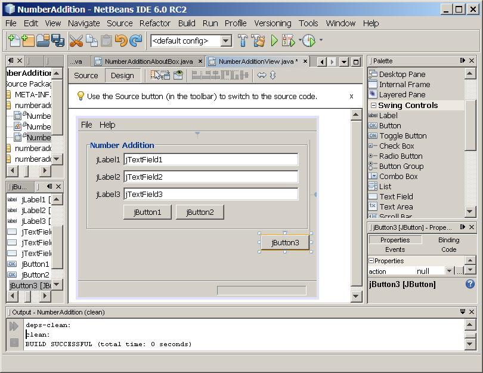
Figure-2.31: Add components to the JPanel
2. Change the text display values of the Label components to
First Number:,
Second Number:, and
Result: as shown in
Figure-2.32 below.
3. Right align the three Label components.
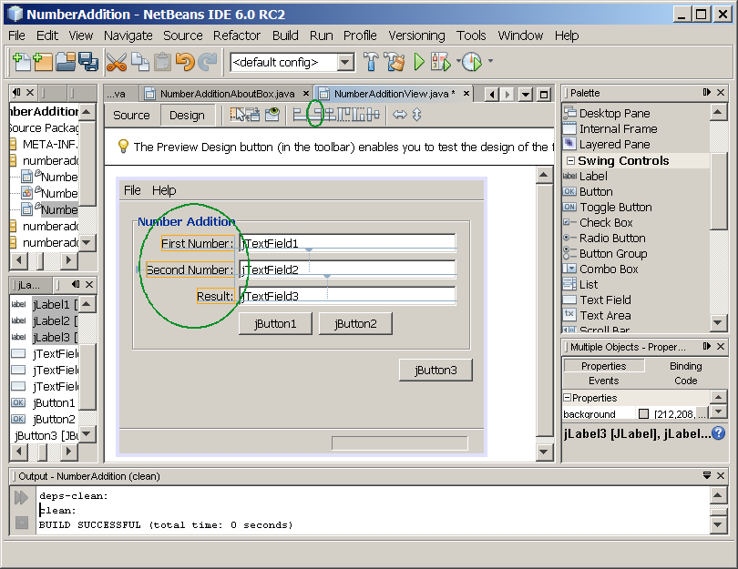
Figure-2.32: Change text values of the Labels
4. Right click
jTextField1 Text
Field component and select
Edit Text.
(Figure-2.33 below)
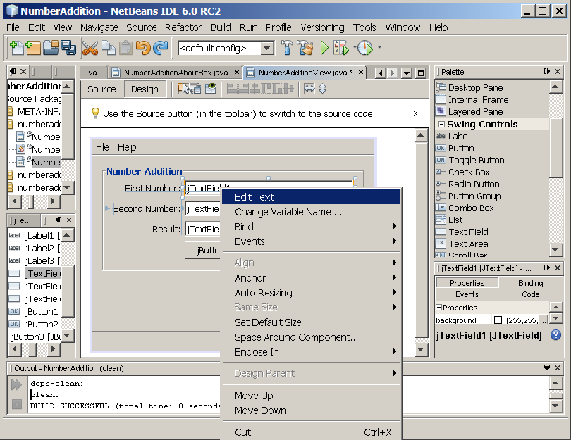
Figure-2.33: Select Edit Text
5. Remove
jTextField1 string.
6. Repeat the process for the other two Text Field components.
7. Right click
jButton1 component
and select
Edit Text and
charge the value to
Add.
(Figure-2.34 below)
8. Repeat the process for the other two Button components and change
the
value to
Clear and
Exit.
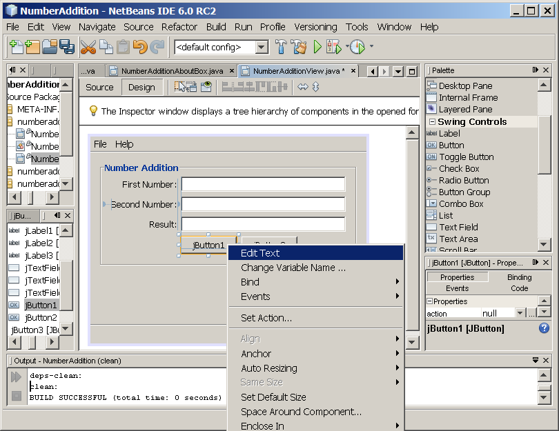
Figure-2.34: Change the text values of the components
9. Observe the the final result looks as shown in Figure-2.35 below.
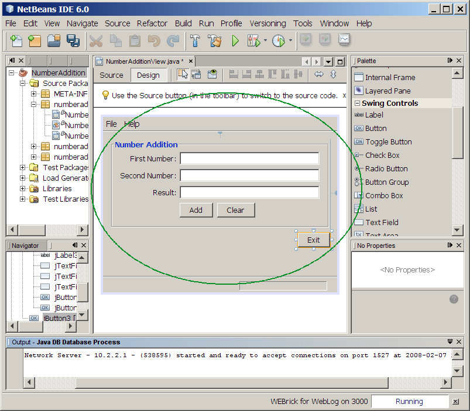
Figure-2.35: Number Addition GUI
return
to top of this exercise
(2.4)
Add an event handler to GUI components
In this step, you are going to register event handlers to the
Buttons. When a button is pressed, the event handler that is
registered for that button will be invoked.
1. Right click
Exit button
and select
Events->Action->actionPerformed.
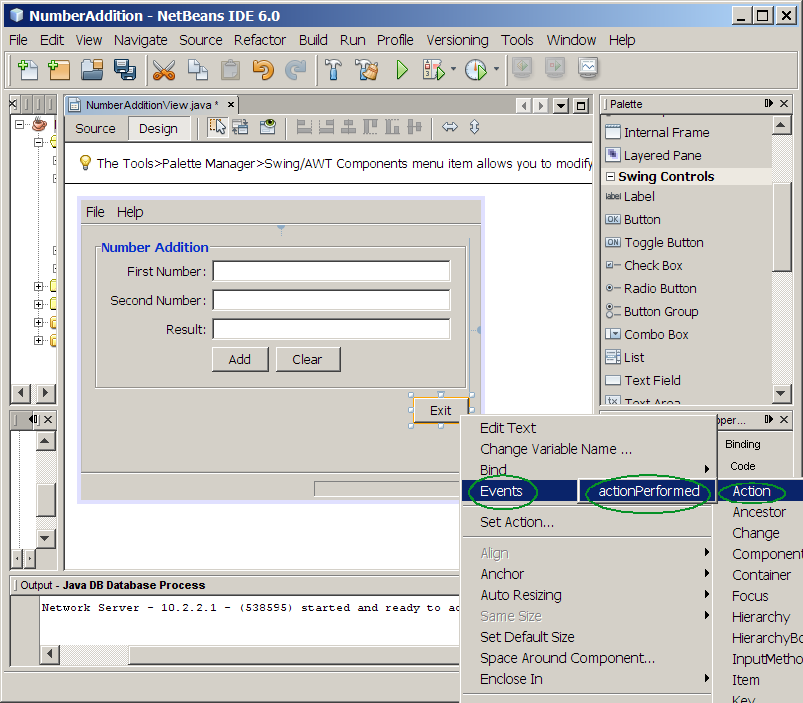
Figure-2.41: Add event handler to Exit button
2. Modify the event handler for the
Exit
button as shown in Figure-2.42 below. When Exit button is
pressed, the event handler called
jButton3ActionPerformed
gets
invoked. The code fragment that needs to be added is
highlighted in bold-font.
private void
jButton3ActionPerformed(java.awt.event.ActionEvent evt) {
System.exit(0);
}
|
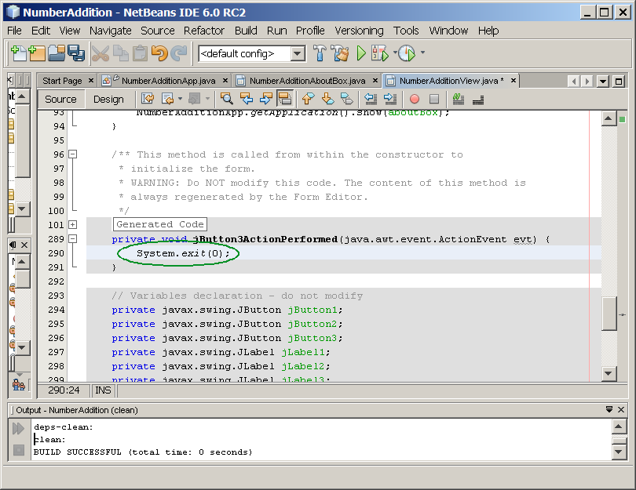
Figure-2.42: System.exit(0) method is added to the event handler
3. Right click
Clear button
and select
Events->Action->actionPerformed.
(Figure-2.43 below)
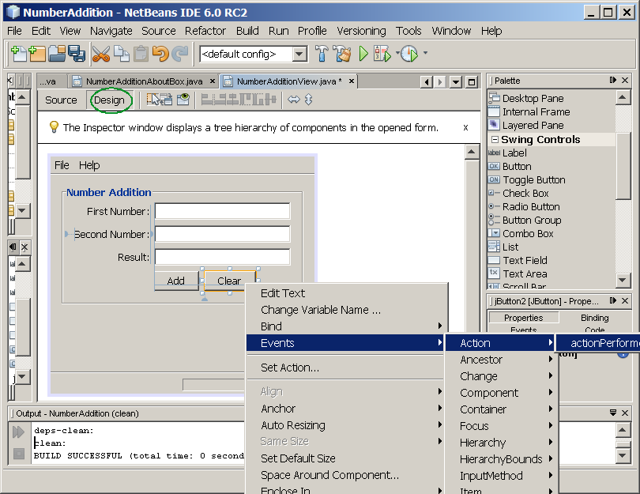
Figure-2.43: Add event handler
4. Modify the event handler as shown in Code-2.45 and Figure-2.46
below. The code fragment that
needs be added is high-lighted in bold-font.
private void
jButton2ActionPerformed(java.awt.event.ActionEvent evt){
jTextField1.setText("");
jTextField2.setText("");
jTextField3.setText("");
}
|
Code-2.45: Modified event handler
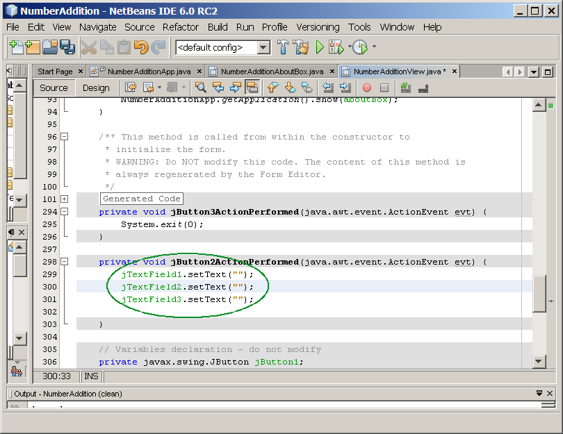
Figure-2.46: Modified event handler for button 2
5. Right click
Add button and
select
Events->Action->actionPerformed.
(Figure-2.47 below)
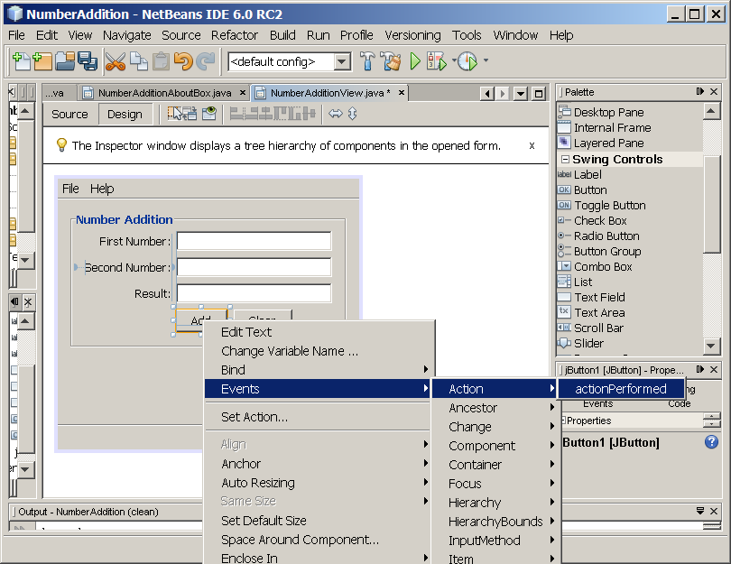
Figure-2.47: Add event handler
6. Modify the event handler as shown in Code-2.48 and Figure-2.49. The
code fragment that
needs be added is high-lighted in bold-font.
private void
jButton2ActionPerformed(java.awt.event.ActionEvent evt){
// First we
define float variables.
float num1,
num2, result;
// We have to
parse the text to a type float.
num1 =
Float.parseFloat(jTextField1.getText());
num2 =
Float.parseFloat(jTextField2.getText());
// Now we can
perform the addition.
result =
num1+num2;
// We will
now pass the value of result to jTextField3.
// At the
same time, we are going to
// change the
value of result from a float to a string.
jTextField3.setText(String.valueOf(result));
}
|
Code-2.48: Modified event handler
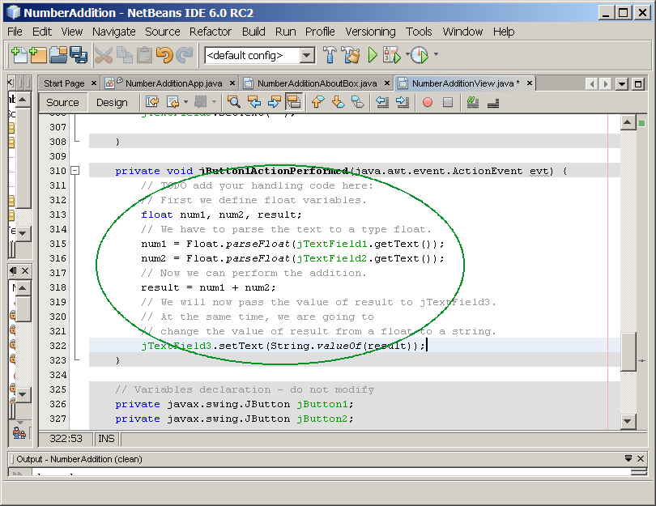
Figure-2.49 Modified event handler
return
to top of this exercise
(2.5)
Build and run the application
1. Right click
the
NumberAddition project and select
Run. (Figure-2.51 below)
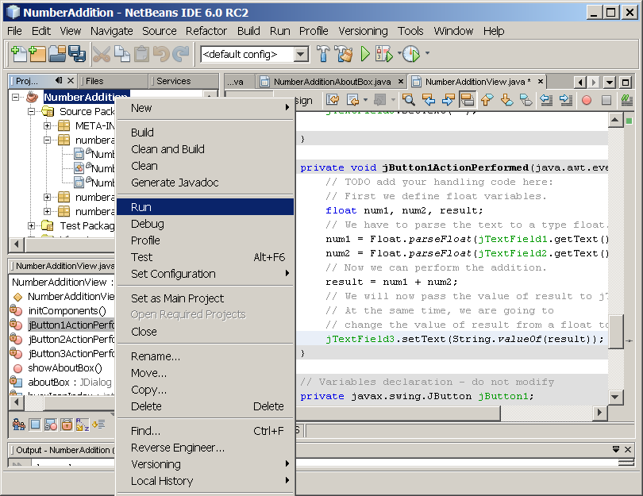
Figure-2.51: Run the application
2. Perform Add operation.
- Enter numbers into the First
Number and Second Number
fields.
- Click Add button.
(Figure-2.52 below)
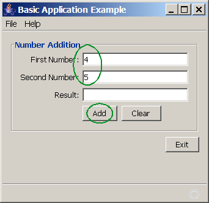
Figure-2.52: Perform Add operation
- Observe that the result is displayed in the Result field.
(Figure-2.53 below)
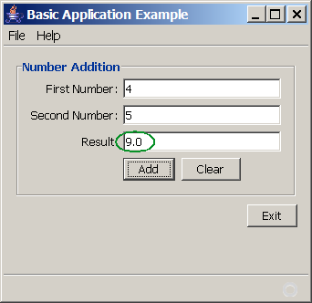
Figure-2.53: The result is displayed
3. Perform Clear operation.
- Click Clear button.
- Observe that the fields are cleared. (Figure-2.54 below)
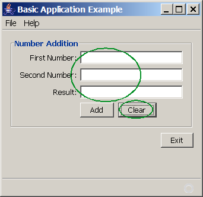
Figure-2.54: Perform Clear operation
4. Perform Exit operation.
- Click Exit button.
- Observe the application closes. (Figure-2.55 below)
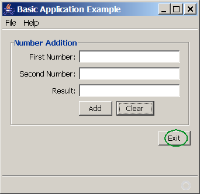
Figure-2.55: Perform Exit operation
return
to top of this exercise
Homework Exercise (for people
who
are taking Sang Shin's "Java Programming online course")
1. The homework is to modify the
NumberAddition project to add
Subtract
button. The
Subtract button
subtracts the value of the
Second Number field from the value of the First Number field and
displays the result in the Result field. (You might want to
create a new project by copying
the
MyNumberComputer
project. You can name the homework project in any way you want
but here I am going to call it
MyNumberComputer.)
Note: If you are taking the "Real World Technologies:
NetBeans GUI
Builder, JRuby, JavaFX, and Java ME" course, please submit the homework as described here.
- Zip file of the the
MyNumberComputer
NetBeans project. (Someone else
should be able to open and run it as a NetBeans project.) You can
use your favorite zip utility or you can use "jar" utility that comes
with JDK as following.
- cd <parent directory that contains MyNumberComputer
directory>
(assuming you named your project as MyNumberComputer)
- jar cvf MyNumberComputer.zip MyNumberComputer
(MyNumberComputer should
contain nbproject directory)
- Captured output screen -
name it as JavaIntro-nbguibuilder.gif
orJavaIntro-nbguibuilder.jpg (or
JavaIntro-nbguibuilder.<whatver
graphics format>)
- Any screen capture that shows that your program is working is
good enough. No cosmetic polishment is required.
- If you decide to use
different IDE other than NetBeans, the zip
file should contain all the files that are needed for rebuilding the
project.